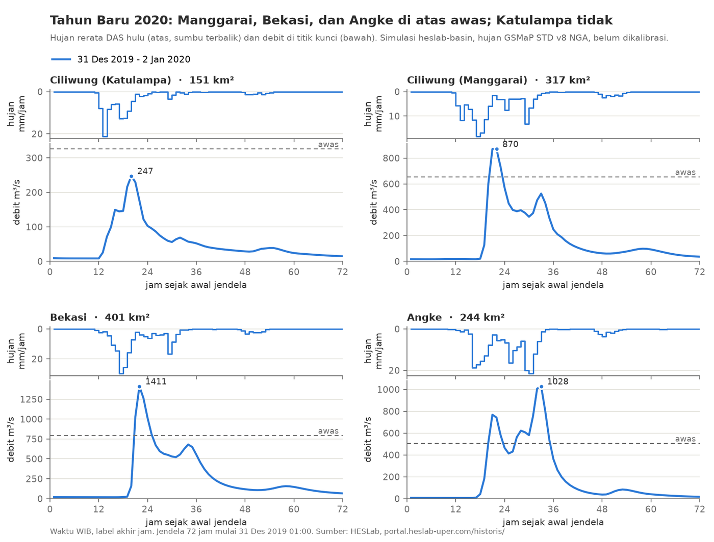

Malam pergantian tahun 2019 ke 2020 berakhir dengan banjir besar di Jabodetabek. Tulisan ini menapak tilas kejadian itu dengan dua sumber: berita dan catatan resmi saat itu, serta simulasi model HESLab yang menghitung ulang hujan dan debit setiap jam untuk seluruh Wilayah Sungai (WS) Ciliwung-Cisadane. Fokusnya tiga sistem sungai yang paling sering disebut: Ciliwung, Bekasi, dan Angke.

Apa yang tercatat saat itu
Hujan sangat lebat turun pada malam pergantian tahun. Kepala BNPB saat itu menyebut curah hujan sekitar 24 jam mencapai 377 mm di kawasan Halim, 350 mm di sekitar TMII, dan 270 mm di Jatiasih, Bekasi (Mongabay, 2 Januari 2020). Angka Halim itu lebih tinggi daripada 340 mm/hari yang tercatat pada banjir 2007. BMKG Stasiun Klimatologi Bogor mengaitkannya dengan zona konvergensi antartropis (ITCZ) yang berada di atas Jawa dan musim hujan yang datang terlambat.
Pada 1 Januari 2020 sore, pintu air di Jakarta menunjukkan pola yang khas (CNN Indonesia):
| Pintu air | Status | Tinggi muka air |
|---|---|---|
| Katulampa (Bogor) | Siaga 3 | 130 cm |
| Depok | Siaga 1 | 410 cm |
| Manggarai | Siaga 2 | 875 cm |
| Karet | Siaga 1 | 700 cm |
| Angke Hulu | Siaga 1 | 340 cm |
| Pesanggrahan | Siaga 2 | 310 cm |
Katulampa, pintu air paling hulu di Ciliwung, hanya berstatus siaga 3, sedangkan Depok, Karet, dan Angke Hulu sudah siaga 1. Artinya, air yang membanjiri Jakarta bukan terutama kiriman dari Puncak, melainkan hujan lebat di wilayah tengah dan hilir.
Banjir juga merendam banyak perumahan di Bekasi, Bogor, dan Tangerang. Pondok Gede Permai di Jatiasih, di tepi Kali Bekasi, dilaporkan terendam sekitar 5 m akibat luapan Cikeas; Villa Nusa Indah di Gunung Putri lebih dari 2 m; Green Ville di Tanjung Duren, Jakarta Barat, 1,5 sampai 2 m (Kontan).
Apa kata model
Model HESLab adalah model hujan-limpasan UPerRRM (Universitas Pertamina Rainfall-Runoff Model) yang dijalankan untuk 1641 subDAS di WS Ciliwung-Cisadane, dengan hujan satelit GSMaP Standard v8 per jam. Model yang sama, dengan hujan GSMaP waktu-nyata, telah diuji untuk peringatan dini banjir di DAS Bekasi (Januriyadi dkk., 2026). Untuk WS ini model belum dikalibrasi terhadap debit terukur, sehingga besaran debitnya belum tentu tepat. Yang lebih bisa dipercaya adalah urutan waktu dan perbandingan antarwilayah.
| Sistem sungai (titik) | Luas hulu | Hujan 24 jam maks | Debit puncak | Puncak (WIB) | Ruas di atas awas |
|---|---|---|---|---|---|
| Ciliwung (Katulampa) | 151 km² | 101 mm | 247 m³/s | 31 Des 20:00 | 14 % |
| Ciliwung (Manggarai) | 317 km² | 147 mm | 870 m³/s | 31 Des 22:00 | 52 % |
| Bekasi (Kali Bekasi) | 401 km² | 176 mm | 1411 m³/s | 31 Des 22:00 | 58 % |
| Angke (hilir) | 244 km² | 200 mm | 1028 m³/s | 1 Jan 09:00 | 100 % |
Hujan 24 jam dan persentase ruas dihitung untuk seluruh DAS hulu tiap titik. Ambang awas adalah ambang bawaan model (hujan × koefisien × luas), bukan ambang resmi pintu air.
Tiga hal menonjol:
- Angke paling merata terdampak. Seluruh ruas di DAS Angke melewati ambang awas, dan debitnya punya dua puncak: pukul 21:00 tanggal 31 Desember dan pukul 09:00 tanggal 1 Januari. Hujan 24 jam di DAS Angke (200 mm) adalah yang kedua terbesar dalam 2015 sampai 2025.
- Katulampa tetap di bawah awas. Model dan catatan pintu air sejalan: Ciliwung hulu tidak menjadi sumber utama banjir ini.
- Hujan paling luas dalam satu dekade. Rerata hujan 24 jam untuk seluruh WS Ciliwung-Cisadane (5365 km²) mencapai 150 mm, tertinggi dalam 2015 sampai 2025 menurut GSMaP. Lebih dari separuh ruas sungai (874 dari 1641) melewati ambang awas.
Batasan
- Hujan satelit adalah rerata kotak sekitar 10 km, sehingga hujan titik seperti 377 mm di Halim tidak tertangkap. Rerata DAS tertinggi di model sekitar 200 mm per 24 jam.
- Model memakai bangunan air yang ada sekarang untuk seluruh periode. Pada 2020 bendungan kering Ciawi dan Sukamahi belum ada (diresmikan 23 Desember 2022, Setkab), begitu pula Sodetan Ciliwung ke Kanal Banjir Timur (diresmikan 31 Juli 2023, Setkab). Debit Ciliwung 2020 di model, terutama di Manggarai, cenderung lebih kecil daripada keadaan saat itu.
- Debit model belum dikalibrasi. Pembandingan dengan tinggi muka air pintu air hanya bersifat kualitatif.
Data per ruas dan per hari dapat dilihat di halaman Historis WS Ciliwung-Cisadane. Perbandingan dengan banjir Maret 2025 ada di tulisan Banjir 2020 dan 2025 dibandingkan.
Rujukan
Januriyadi, N. F., Moe, I. R., Cikmit, A. A., & Sejati, W. (2026). Utilization of realtime GSMaP satellite data for flood early warning in Bekasi watershed using UPerRRM. International Journal of Disaster Management, 9(1), 38–53. https://doi.org/10.24815/ijdm.v9.i1.377